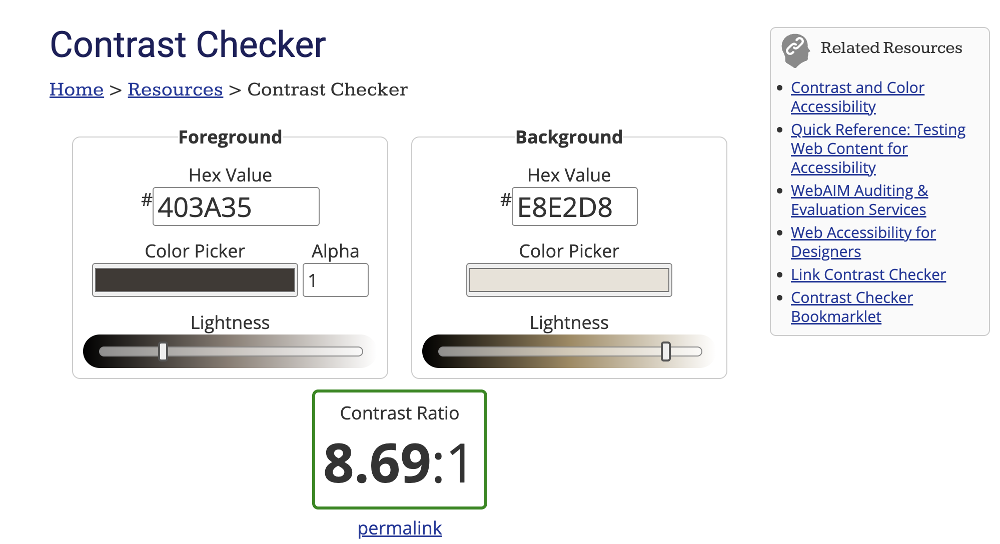
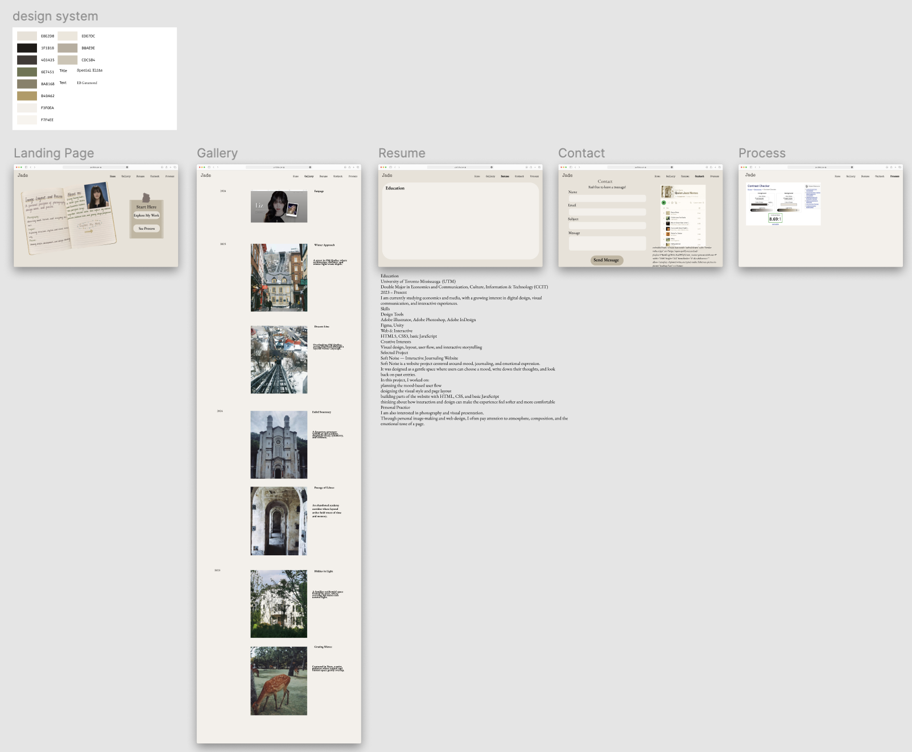

Behind the Scenes
Wireframes & Prototyping
Before moving on to the final visual design phase, I used wireframes to map out the website's overall structure. During this phase, I focused on the page hierarchy, navigation flow, content layout, and the relationships between different sections. These early layouts helped me define the navigation paths users would take between the landing page, portfolio, resume, contact, and process pages, while ensuring the interface remained clean and stylistically consistent. Since the majority of the collected work featured on the site consists of photography, I wanted to create a peaceful and serene atmosphere, which is why I chose to use off-white extensively. The inclusion of sticky note elements was also intended to complement the notebook theme.

Contrast Checker

Digital Prototype Layout
Accessibility Statement
Accessibility is a key consideration in my design decisions, as I want the website to be not only visually appealing but also accessible to a wide range of users. Throughout the design process, I considered the user experience across various devices, screen sizes, and browsing environments. I carefully adjusted the color contrast to ensure that my chosen color scheme passed the contrast checker.
Additionally, I deliberately avoided using a harsh, pure white interface, opting instead for an off-white background to reduce eye strain and create a more comfortable reading experience. From a structural perspective, I utilized semantic HTML tags such as <header></header>, <main></main>, <article></article>, and <form></form> to clarify the content hierarchy and better support screen readers. Through responsive media queries, I adjusted typography, spacing, and click targets for smaller screens, ensuring the website remains readable and easy to interact with on mobile devices.